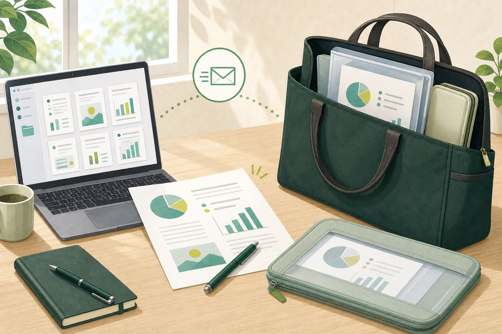
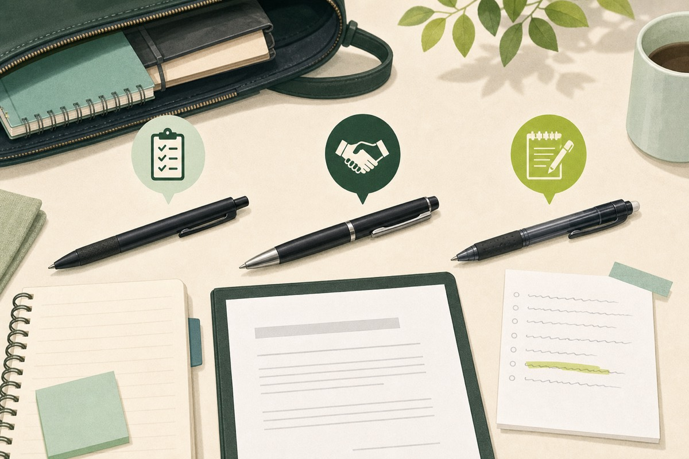
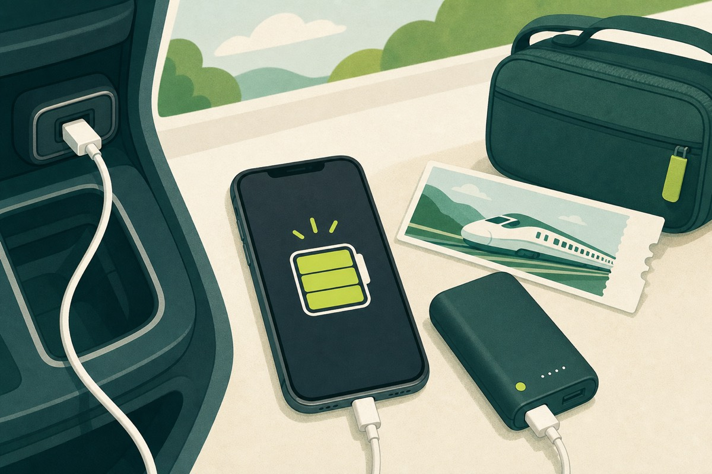
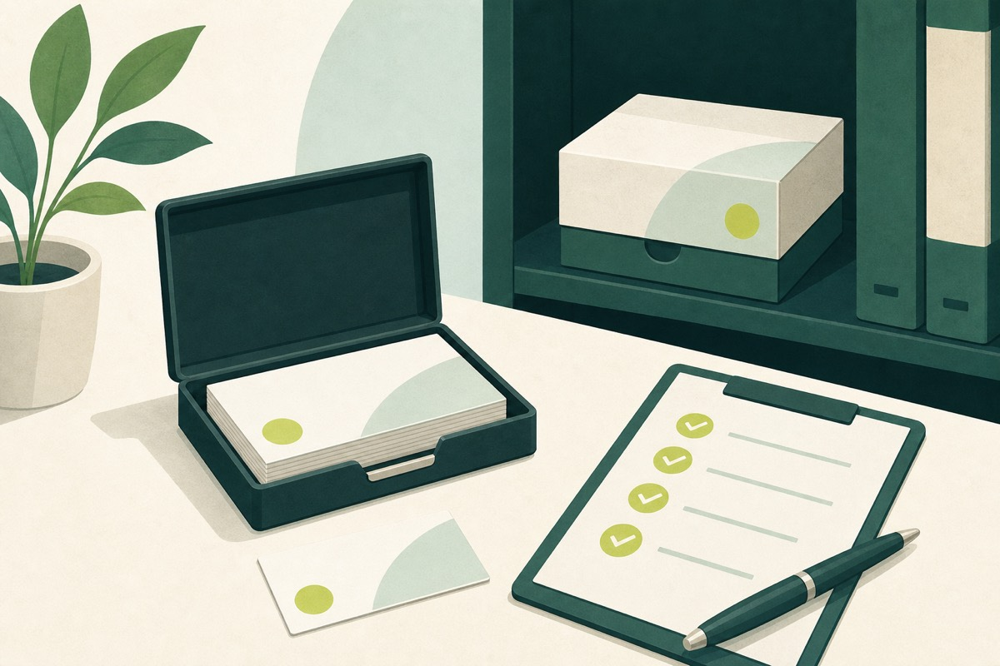
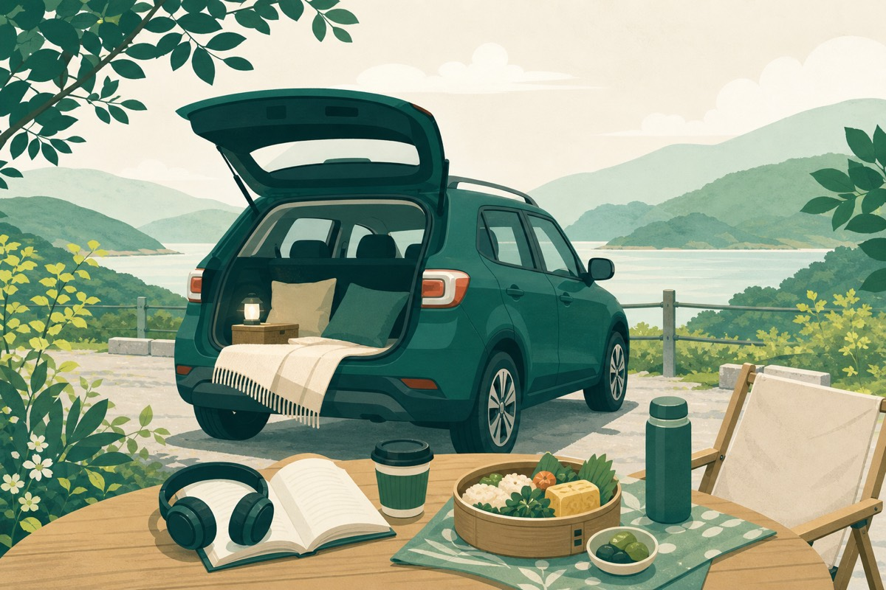
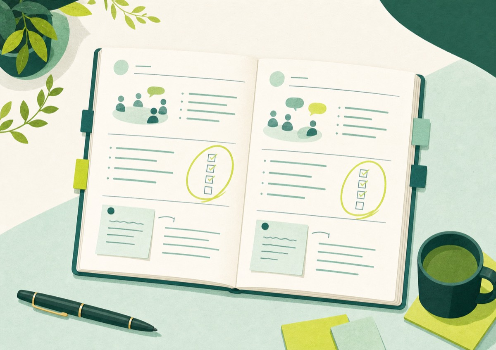
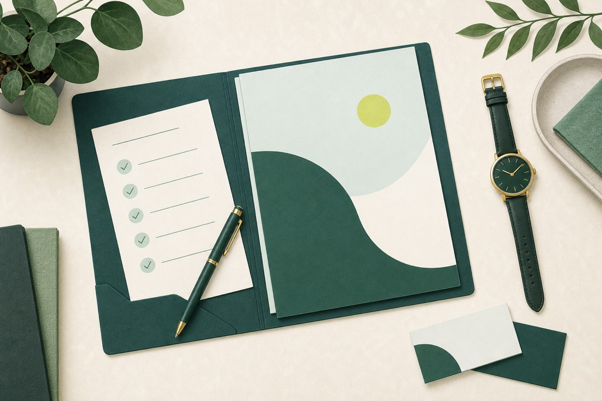

営業効率化
営業資料を忘れないための出発前確認と持ち運び方
事前送付、内容確認、ファイル収納で訪問前の資料準備を整える。
続きを読む →SALES × PRODUCTIVITY
現場で役立つガジェットと、小さな仕事効率化の工夫を紹介する実用ブログです。忙しい毎日に、すぐ試せるヒントを届けます。
新着記事を読む →LATEST STORIES

事前送付、内容確認、ファイル収納で訪問前の資料準備を整える。
続きを読む →
普段使い、契約書、メモ。それぞれの場面に合う一本を選ぶ。
続きを読む →
土足禁止の訪問先で慌てないために、約10cmの靴べらを持ち歩く。
続きを読む →
商談前・季節・食後に合わせて使う、5つの身だしなみ用品。
続きを読む →
40％を目安に充電し、車ではUSB、電車ではモバイルバッテリーを使う。
続きを読む →
外出前に確認し、残り20枚以下で補充。事務所には最低1箱を保管する。
続きを読む →
お礼、不明点、次回予定を確認し、相手に合う連絡方法を選ぶ。
続きを読む →
当日中に終える仕事と翌日のToDoを分け、家族との時間を守る方法。
続きを読む →
商談準備の後は音楽や読書、外での食事を楽しんで気持ちを切り替える。
続きを読む →
訪問先、経路、名刺、資料、充電、天気、身だしなみを順番に確認。
続きを読む →
お客様の要望・宿題・ニーズを整理し、TODOを行動へつなげるノート術。
続きを読む →
よく送るメールは型を保存し、迷いやすい文章だけAIで整える方法。
続きを読む →
ケーブルや鍵など、バッグの中で散らばりやすい小物を一か所にまとめた方法。
続きを読む →
訪問先の確認から資料の最終点検まで。抜け漏れを減らす、シンプルな準備手順。
続きを読む →
毎日持つものだから、軽さと使いやすさを優先して選びました。
続きを読む →移動直後の短い記録で、次の作業をスムーズにつなげます。
続きを読む →EXPLORE
ABOUT THIS MEDIA
シゴトノートは、営業の現場で試した工夫を記録する個人メディアです。商品やサービスを紹介する場合も、良い点だけでなく気になった点まで丁寧にお伝えします。